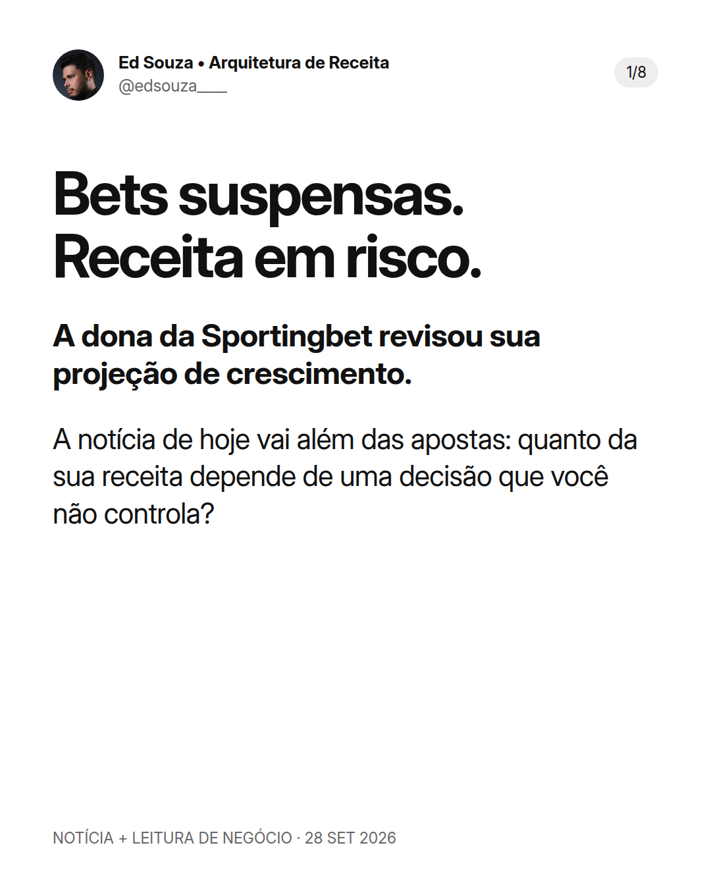

Legenda
Bets suspensas. Receita em risco. Nesta segunda-feira, 28/09, a Entain, dona da Sportingbet, atualizou suas projeções após a proibição provisória das apostas online no Brasil, anunciada na semana passada. Se a suspensão continuar até o fim do ano, a companhia prevê crescimento de 4% a 6% na receita líquida online de 2026, em moeda constante. É uma projeção condicionada, não um resultado fechado. O detalhe que me interessa como empresário: o Brasil representaria cerca de 5% da receita líquida online do grupo, mas a contribuição esperada para o EBITDA era modesta. A faixa projetada de EBITDA do grupo foi mantida, agora com expectativa de ficar no limite inferior. Receita, resultado e caixa não são a mesma coisa. Não estou comparando o risco regulatório das bets ao risco de uma conta de anúncios. São riscos diferentes. Estou olhando para a dependência que cada empresa precisa mapear. Para quem já tem produto, equipe e operação, eu faria um teste nesta semana: • Sistema de Aquisição: simule 30 dias sem a principal fonte de novos clientes. • Sistema de Produtos: avalie o que pode vender à base atual sem depender desse canal. • Sistema de Margem e LTV: projete o caixa, os custos que continuam vencendo e a retenção. A simulação não é uma previsão. É uma forma de descobrir o ponto de falha antes que ele vire urgência. Hoje, sua maior dependência está em um canal, um cliente ou um parceiro? Te vejo no topo. Ed Souza | Arquitetura de Receita Fontes: comunicado da Entain de 28/09/2026 e Reuters, 28/09/2026. Notícia separada da análise empresarial. A suspensão é provisória; o comunicado informa que a continuidade da medida depende de aprovação do Congresso dentro de 120 dias. Revalidar a situação antes de publicar.